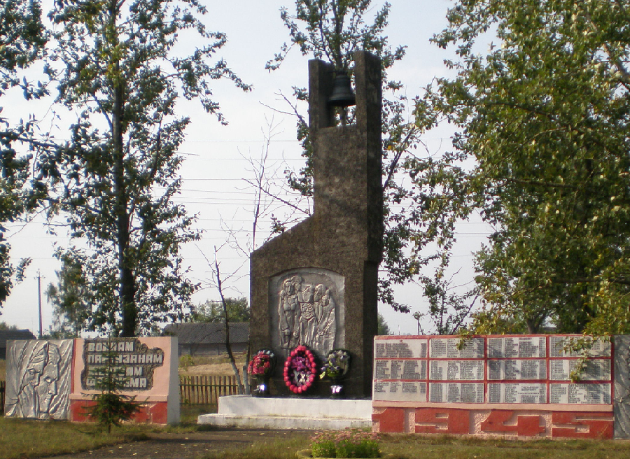

Обелиск
В июне 1944 года фашисты уничтожили 172 двора, расстреляли
275 жителей. Центральная часть памятника представляет собой
стилизованные остатки печи сожженного дома, в трубу которого
вмонтирован колокол, в нижней части – барельефное изображение
отца и матери, поддерживающих раненого сына. По обеим сторонам
центральной части – 2 горизонтальные стелы с барельефным
изображением лиц мирных жителей в трауре, советских воинов и партизан и именами погибших.
